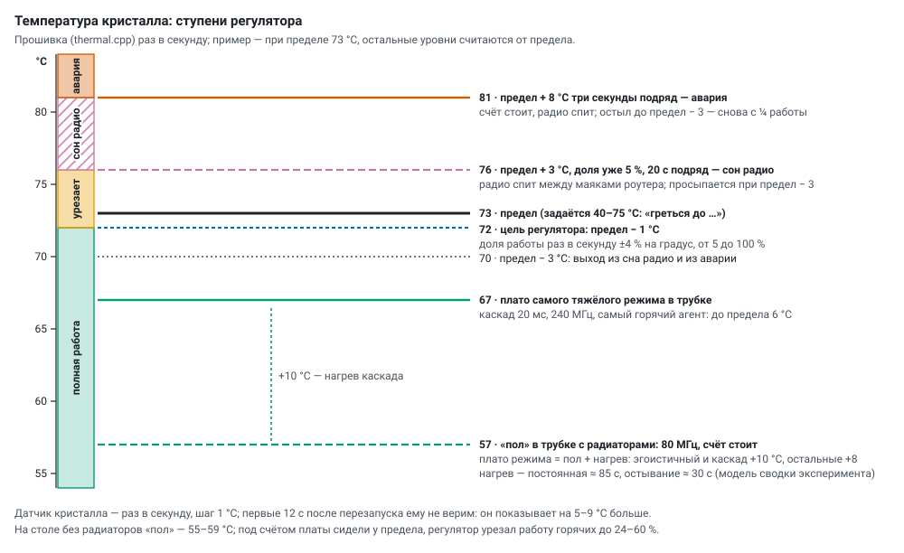
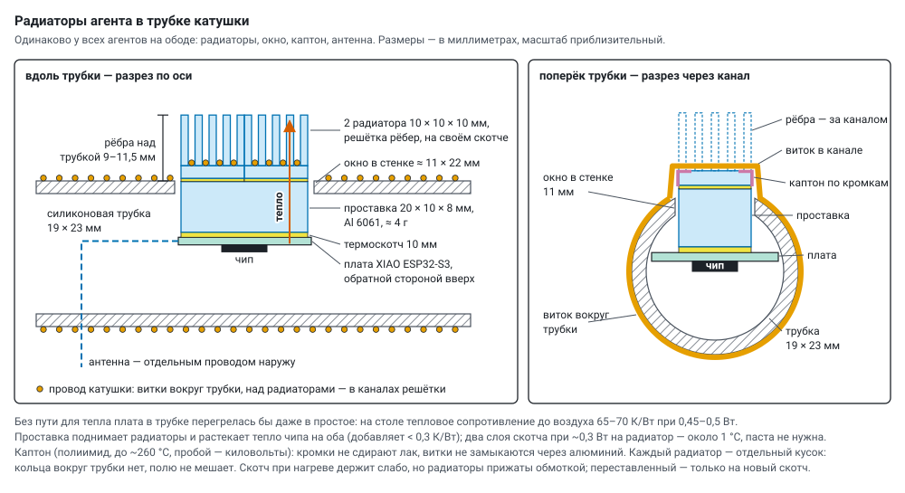

Agent temperature: regulator, rest, heatsinks
English translation of docs/thermal.md — the Russian original is the source of truth. Labels inside the diagrams are in Russian.
The goal is the largest total coherent work of a group: more primes from everyone's noise without overheating (die limit 73 °C, settable up to 75) and without failures that break the group. The agents sit in the tube under the coil winding, each with heatsinks (§ 4.2).


1. How it works#
- Die sensor — once a second, 1 °C step. For the first 12 s after a restart we do not trust it: it reads 5–9 °C high.
- Work-share regulator (
thermal.cpp): once a second the work share changes by 4 % for every degree of deviation from the target (limit − 1 °C), from 5 to 100 %. For the rest of the time the computation sleeps in chunks of 2 ms and more. Both computations are throttled: the test on the compute core and noise with sieving on the radio core (in "two cores" mode), each core has its own sleep debt. - Radio sleep — only when the share is already 5 % and the die has been 3 °C above the limit for 20 s in a row: the radio sleeps between router beacons and wakes at limit − 3 °C.
- Emergency — 8 °C above the limit for three seconds in a row: computing stops, the radio sleeps until the die cools to limit − 3 °C; then work resumes at ¼.
- CPU frequency — set by hand only (80 / 160 / 240 MHz, usually 240), the regulator does not touch it; "Stop" sets 80 MHz. Transmit power — by hand (
txp, 2–20 dBm, usually 20). The router ping runs only with ping CSI noise.
2. Measurements#
In the tube with heatsinks (wheel 1, 240 MHz, the hottest agent): the "floor" at 80 MHz without computing ≈ 57 °C; under computing — a plateau of "floor + heating of the mode": the heaviest mode (cascade 20 ms, two cores) — 67 °C, 6 °C below the limit, the regulator does not intervene. Heating to the plateau has a time constant of ≈ 85 s, cooling ≈ 30 s. From these figures the experiment summary estimates the heat of runs (selfish and cascade +10 °C, the others +8; THERM in server/static/plan.html, program.md).
On the table without heatsinks (four boards, 15 min or longer in one state, median, °C):
| standing | №3 | №4 | №5 | №6 |
|---|---|---|---|---|
| 80 MHz, LED off ("Stop") | 56.3 | 54.8 | 58.5 | 57.7 |
| 240 MHz | 59.3 | 59.8 | 61.5 | 56.7 ¹ |
| cold start, first seconds | 44.3 | 41.8 | 44.5 | 44.7 |
¹ a different time of day — the room was cooler.
Under computing (240 MHz, limit 70 °C) the boards sat at the limit: each on its own, two cores — 141–170 primes/s for the four at a work share of 48–100 %; cascade — 63 at 24–89 %; relay (33–37) and one number for all (8) — at 100 %; even slow noise (ADC, CSI, jitter: 1–3 primes/s) — 62–69 °C. Heating from idle: +4…5 °C in 10 s, +7…9 °C in a minute, at the limit after 3–5 minutes. Cooling in "Stop": −2…3 °C in 30 s, −4 in a minute, the "floor" after ~5 minutes. Two time constants: the die (seconds) and the board (minutes).
The main point: between the idle "floor" and the limit there are only 10–14 °C, and most of the heat comes not from computing but from what is always running.
3. Where the heat comes from#
- The radio is always receiving — without sleep, otherwise ESP-NOW loses frames, and CSI and radio noise disappear. This is the main "floor".
- 240 MHz clock — +3…5 °C even at idle (clock tree, idle cycles).
- RNG noise spins the core idle.
esp_random()waits ~22 µs per word actively, in a loop (randomness.md); in "two cores" mode this is ~70 % of the noise core's time — heat without computing. - The transmitter at 20 dBm. In a cascade — hundreds of frames per second, each at the amplifier's full power. The boards are close (signal −45 dBm): four "all on one number" at 2 dBm gave 7.5 primes/s against 7.7 at 20 dBm.
- The computing itself: Miller–Rabin (accelerator) and the sieve.
- The 5 → 3.3 V regulator on the board next to the die.
- The sensors differ: №4 reads about 3 °C lower than the others (cold start 41.8 against 44.3–44.7); one limit for all cuts harder those whose sensor reads "hotter".
4. What to do about it#
4.1 CPU frequency — less benefit than it seems#
The flash runs at 80 MHz, and then the core is powered at the same 1.25 V at 80, 160 and 240 MHz (soc/rtc.h in ESP-IDF: DIG_DBIAS_80M_160M = DIG_DBIAS_240M with CONFIG_ESPTOOLPY_FLASHFREQ_80M). Work per degree at 160 MHz is almost the same as at 240 with regulator pauses. The gain is only on idle cycles (+3…5 °C at idle) and on active waiting for noise (§ 3, item 3). More would come from RNG noise without active waiting: read the register when a word is ready, and sieve candidates in between.
4.2 Heatsinks and the "floor"#
The agents sit inside a silicone tube (19 × 23 mm) under the coil winding (a toroid along a Ø900 mm rim). Without a heat path a board in the tube would overheat even at idle (on the table the thermal resistance to air is 65–70 K/W at 0.45–0.5 W), so every agent has the same arrangement:


- on the back of the board — an aluminium spacer 20 × 10 × 8 mm (cut from a 6061 strip with an 8 × 20 mm cross section, ≈ 4 g) on 10 mm thermal tape, with two heatsinks 10 × 10 × 10 mm with a grid of fins in a row on it, on their factory tape; the spacer spreads the chip's heat to both (< 0.3 K/W), two layers of tape — about 1 °C, no thermal paste needed. The fins come out through a window ≈ 11 × 22 mm, 9–11.5 mm above the tube;
- the coil wire lies in the channels of the fin grid (the winding is not broken, the copper itself carries heat away); along the fin edges under the wire — kapton: the edges do not scrape the enamel, the turns do not short through the aluminium. Each heatsink is a separate piece, there is no ring around the tube, it does not disturb the field. The tape holds weakly when hot, but the heatsinks are pressed by the winding; one that has been moved goes only onto new tape. The antenna — a separate wire to the outside.
The "floor" would go even lower with: transmit power by signal margin (start at 11 dBm instead of 20, check losses per pair with fail_to, then follow the worst pair) and sensor calibration (the offset of each board from its cold start, the limit applied to the corrected temperature). Neither has been done yet.
4.3 Rest in turns#
A board that the regulator has throttled slows the whole group in relay and cascade: its pieces and turns are waited for, rounds are assembled without it. An announced rest does not slow the group — the resting one is not waited for. A dispatcher on the server (rest_tick() in server/monitor.py, settings REST_ROT and REST_GROUP) looks at everyone's temperatures every 2 s; a button on the old panel switches off → in turns → whole group (default off).
- In turns: a candidate is at the limit (≥ limit − 2 °C) and throttled (work < 85 %); the hottest one rests, no more than a quarter of the group at a time (one of four), groups of three and more. Rest lasts until it cools by 5 °C, from 60 to 150 s; between rests of the same agent — at least 3 min.
- Whole group: everyone works at full power until the regulator starts cutting the hottest (≥ limit − 2 °C, work < 95 %); then everyone rests until it cools by 6 °C (40–90 s), and they return together — while they work, rounds are assembled from everyone's pieces.
- The rest command does not change the settings (the
cidnumber stays the same): the agent stops computing and transmitting, sets 80 MHz and tells the group "resting" (REST s=…/BACK, frameM_REST— group_protocol.md); on return — "back in action". It comes back by itself aftersseconds (180), even if the server disappears. Each rest is a line in the agent's history ("rest in turns: 68.5 → 63.5 °C in 75 s"); a resting agent's silence is not counted as an error. One number for all — no rest (the bases are divided between everyone: the resting one would have to be replaced).
What the experiment showed (cascade for 10 minutes starting from rest, four boards without heatsinks, limit 70 °C, tools/rest_ab.py):
| rest | primes/s | second half | rounds from everyone's pieces | coherent primes/s |
|---|---|---|---|---|
| none | 85.7 | 82.3 | 42.5 % | ~36 |
| in turns (7 rests of 60 s) | 89.6 | 82.5 | 26.2 % | ~23 |
| whole group (40 s rest) | ~47 over the first 6 min | — | — | — |
Without rest the regulator held the boards from 24–28 % work (the hottest) to 100 % (the coolest): on average the group worked at ~62 % power (82–86 primes/s instead of 124 in a sprint). In turns the mechanics work (exactly one rests, it cools by 6–11 °C in a minute, the group does not stall), but in steady state there is no gain: after 40–60 s of work the die is at the limit again, and the others replace the resting one's pieces with their own noise. Whole group — after 40 s of rest the hottest is back at the limit in 20–30 s. Rest does not cancel heat, it redistributes it: the limit is the average power the board can dissipate. The total is raised by less heat per prime and better dissipation — heatsinks, RNG noise without active waiting, a quieter transmitter.
4.4 Sprint: full performance#
Everyone rests down to the "floor" → the mode runs at full power for 60–90 s (from a cold state the regulator does not have time to throttle) → totals → rest again. This shows the full performance of each mode; long runs show the sustained one. tools/sprint.py 75 (four boards without heatsinks, 256 bits, 240 MHz, limit 70 °C, measured from second 15 to second 75):
| mode | primes/s | per agent | work (lowest) |
|---|---|---|---|
| each on its own | 103.6 | 25.9 | 100 % |
| each on its own, two cores | 183.6 | 45.9 | 62 % — by the end one at the limit |
| all on one number | 10.8 | 2.7 | 100 % |
| relay, two cores | 36.8 | 9.2 | 100 % |
| cascade, two cores, 20 ms deadline | 123.9 | 31.0 | 32 % — the hottest at the limit within a minute |
4.5 Rest between runs#
Before a program run the generators stand at 80 MHz with the coils off until the temperature settles (dropped by no more than 0.5 °C over 90 s, from 60 s to 6 min), until they cool to a set value, or for a set time. Every mode starts from the same state, and the initial temperature is written into the run's totals as a covariate. When to rest — program.md.
5. Agent rating: the error history#
The server keeps a history of events for every agent (data/agents/events.jsonl, server/agent_rating.py) and computes a rating: 100 minus the weights of events over a day, a weight halves every 6 h; the same event three times in a day is marked "systematic". The agent tile shows the rating and the latest events, the number gets a badge. Reliable ones go into groups and sprints; an unreliable one should be checked or removed.
| event | where it is seen | weight |
|---|---|---|
| a prime failed the server's check | prime log | 50 |
| the firmware self-test failed | st | 40 |
| a neighbour found a witness: the "prime" is composite | split at the neighbour | 30 |
| restart after a fault: firmware, watchdog, brown-out or power fault, core hang | rbt | 25 |
| the radio watchdog restarted it: the radio was not transmitting | rbt | 20 |
| the watchdog restarted it: no Wi-Fi for 90 s; "zombie" even after three reconnects | rbt | 15 |
| the Wi-Fi firmware update did not load | OTA | 10 |
| Wi-Fi "zombie" — the watchdog reconnected | wrst | 8 |
| frames from it get lost | fail_to per pair | 5 |
| self-cleaning: low memory — restart between runs | rbt | 5 |
| the group did not hear it ("silent") | mute at the neighbours | 3 |
| thermal emergency: computing stopped | ts | 2 |
| a normal restart (power, USB, firmware), rest in turns | — | 0 |
6. What else to check#
- Sprint and steady state at 240 / 160 / 80 MHz in the tube; cascade at 20 / 11 / 5 dBm.
- RNG noise without active waiting, transmit power by signal margin.
- Calibration of the board temperature sensors (they differ by several degrees).